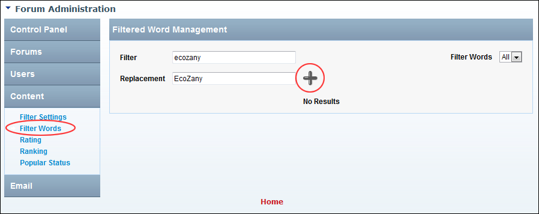

Adding a Filtered Word
How to filter any content such as words, phrases and numbers from Forum posts. You can choose to either remove the content from the post or replacing it with an alternate word, phrase or number.
- Go to the Forum Administration page. See "Navigating to the Forum Admin Page"
- In the left-hand panel, select Content > Filter Words. This displays the Filtered Word Management window.
- In the Filter text box, enter the content to be filtered.
- In the Replacement text box, enter the replacement content - OR - Leave blank to remove the filter word without replacing it.

- Click the Add button. The newly added filtered word is now displayed in the Filtered Word List on this page.